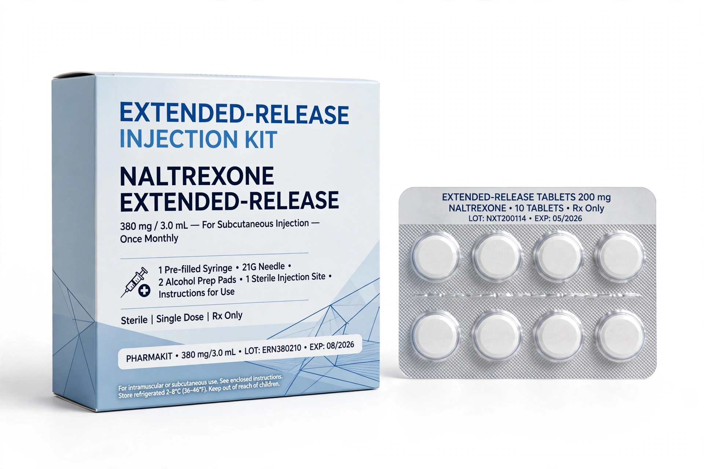

| Naltrexone | |
|---|---|
| Trade names | Revia, Vivitrol, Depade, others |
| Routes | By mouth, intramuscular injection |
| Class | Opioid antagonist |
| Elimination half-life | ~4 hours (oral); metabolite 6β-naltrexol ~13 hours |
| Formula | C20H23NO4 |
| Legal status | Prescription only |
Naltrexone, sold under the brand names Revia and Vivitrol among others, is a medication primarily used to manage alcohol use disorder or opioid use disorder by reducing cravings and the reinforcing effects of alcohol and opioids. It is an opioid receptor antagonist, related to naloxone but longer-acting and orally active. It is taken by mouth (typically 50 mg daily) or by monthly intramuscular injection (Vivitrol, 380 mg). It was approved for opioid dependence in 1984 and for alcohol dependence in 1994 in the United States.

For alcohol use disorder, naltrexone reduces return to heavy drinking; it may be taken daily or targeted before anticipated drinking (the "Sinclair method"). For opioid use disorder, patients must be opioid-free for 7–10 days before starting, lest it precipitate withdrawal; the monthly injection improves adherence compared with daily tablets. It is also combined with bupropion in a weight-loss product (Contrave), and low-dose naltrexone ("LDN") is used off-label for conditions such as fibromyalgia and multiple sclerosis, with limited evidence.
Common side effects include nausea, headache, dizziness and insomnia. Naltrexone blocks opioid analgesics, so patients must inform medical providers, and attempts to override blockade with large opioid doses can be fatal; after stopping naltrexone, reduced tolerance increases overdose risk. High doses have been associated with liver enzyme elevations, and caution is advised in acute hepatitis or liver failure — relevant because many candidates have alcoholic liver disease. Unlike disulfiram it does not make drinking unpleasant, and unlike acamprosate it is hepatically metabolised. See Substance use disorder.